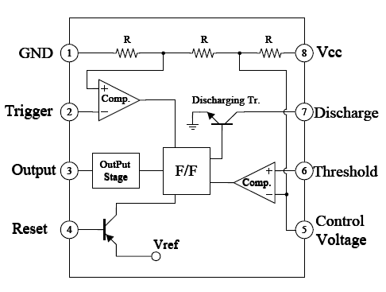
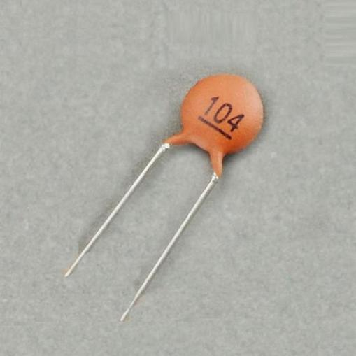

Lesson 15 NE555 Timer¶
Introduction¶
The NE555 Timer, a mixed circuit composed of analog and digital circuits, integrates analog and logical functions into an independent IC, thus tremendously expanding the applications of analog integrated circuits. It is widely used in various timers, pulse generators, and oscillators. In this experiment, the Raspberry Pi is used to test the frequencies of square waves generated by the 555 oscillating circuit and show them on terminal windows.
Newly Added Components¶

Principle¶
Potentiometer

Potentiometer is also a resistance component with 3 terminals and its resistance value can be adjusted according to some regular variation. Potentiometer usually consists of resistor and movable brush. When the brush is moving along the resistor, there is a certain resistance or voltage output depending on the displacement.
The functions of the potentiometer in the circuit are as follows:
1.Serving as a voltage divider Potentiometer is a continuously adjustable resistor. When you adjust the shaft or sliding handle of the potentiometer, the movable contact will slide on the resistor. At this point, a voltage can be output depending on the voltage applied onto the potentiometer and the angle the movable arm has rotated to or the distance it moves.
2.Serving as a rheostat When the potentiometer is used as a rheostat, connect the middle pin and one of the other 2 pins in the circuit. Thus you can get a smoothly and continuously changed resistance value cused by moving contact.
3.Serving as a current controller When the potentiometer acts as a current controller, the sliding contact terminal must be connected as one of the output terminals.
555 IC
The 555 IC was originally used as a timer, hence the name 555 time base circuit. It is now widely used in various electronic products because of its reliability, convenience, and low price. The 555 is a complex hybrid circuit with dozens of components such as a divider, comparator, basic R-S trigger, discharge tube, and buffer.
Pins and functions:
As shown in the picture, the pins are set dual in-line with the 8-pin package.
Pin 1 (GND): the ground
Pin 2 (TRIGGER ): when the voltage at the pin reduces to 1/3 of the VCC (or the threshold defined by the control board), the output terminal sends out a High level
Pin 3 (OUTPUT): outputs High or Low, two states 0 and 1 decided by the input electrical level; maximum output current approx. 200mA at High
Pin 4 (RESET): when a Low level is received at the pin, the timer will be reset and the output will return to Low level; usually connected to positive pole or neglected
Pin 5 (CONTROL VOLTAGE): to control the threshold voltage of the chip (if it skips connection, by default, the threshold voltage is 1/3 VCC and 2/3 VCC)
Pin 6 (THRESHOLD): when the voltage at the pin increases to 2/3 VCC (or the threshold defined by the control board), the output terminal sends out a High level.
Pin 7 (DISCHARGE): output synchronized with Pin 3, with the same logical level; but this pin does not output current, so pin 3 is the real High (or Low) when pin 7 is the virtual High (or Low); connected to the open collector (OC) inside to discharge the capacitor.
Pin 8 (VCC): positive terminal for the NE555 timer IC, ranging +4.5V to +16V
The NE555 timer works under the monostable, astable and bistable modes. In this experiment, apply it under the astable mode, which means it works as an oscillator, as shown below:
Cap
A ceramic capacitor is a capacitor that is made of ceramic material and works as a dielectric. It is coated with a metal film on the surface of the ceramic and sintered at a high temperature. The ceramic capacitor is commonly used in high-stability oscillator circuits as loops, bypass capacitors, and pad capacitors. It is a non-polar capacitor, so this capacitor does not need to distinguish between positive and negative during installation.
In the circuit of this lesson, the main function of the ceramic capacitor, high-frequency filtering is to remove some clutter that may occur in the working process of the NE555 chip, so that the waveform is more stable.

{kind=link}
{kind=link}
Working Process:¶
The oscillator starts to shake once the circuit is power on. During energizing, since the voltage at C1 cannot change abruptly, which means pin 2 is Low level initially, set the timer to 1, so pin 3 is High level. The capacitor C1 charges via R1 and R2 in a time span:
When the voltage at C1 reaches the threshold 2/3Vcc, the timer is reset and pin 3 is Low level. Then C1 discharges via R2 till 2/3Vcc in a time span:
Then the capacitor is recharged and the output voltage flips again:
{kind=link}
For C Language Users¶
Command¶
1. Go to the folder of the code.
cd /home/pi/electronic-kit/for-raspberry-pi/c/Lesson_15_NE555_Timer
2. Compile the code.
gcc 15_NE555_Timer.c -lwiringPi
3. Run the executable file.
sudo ./a.out
When the code is running, you will see the number of pulses on the display screen and the level of pin3 in NE555 at this time.
Code¶
1.#include <stdio.h>
2.#include <string.h>
3.#include <errno.h>
4.#include <stdlib.h>
5.#include <wiringPi.h>
6.
7.#define OutPin 1
8.
9.static volatile int globalCounter = 0 ;
10.
11.void exInt0_ISR(void) //GPIO 1 interrupt service routine
12.{
13. ++globalCounter;
14.}
15.
16.int main (void)
17.{
18. if(wiringPiSetup() < 0){
19. fprintf(stderr, "Unable to setup wiringPi:%s\n",strerror(errno));
20. return 1;
21. }
22.
23. delay(2000);
24. pinMode(OutPin,INPUT);
25. pullUpDnControl(OutPin,PUD_UP);
26. wiringPiISR(OutPin, INT_EDGE_FALLING, &exInt0_ISR);
27.
28. while(1){
29. printf("Current pluse number is : %d, %d\n", globalCounter,digitalRead(OutPin));
30. delay(100);
31. }
32. return 0;
33.}
Code Explanation¶
9.static volatile int globalCounter = 0 ;
Define a variable to record the number of pulses, and initialize the number of pulses to 0.
11.void exInt0_ISR(void)
12.{
13. ++globalCounter;
14.}
Set an external interrupt function and globalCounter will automatically +1 when an interrupt occurs.
24. pinMode(OutPin,INPUT);
25. pullUpDnControl(OutPin,PUD_UP);
Set the out pin of NE555 to INPUT mode, then let the pin be in pull-up state (1).
26. wiringPiISR(OutPin, INT_EDGE_FALLING, &exInt0_ISR);
Set an interrupt in OutPin, when the value of OutPin changes from 1 to 0. Then call the exInt0_ISR() function to let the variable globalCounter add 1.
29. printf("Current pluse number is : %d, %d\n", globalCounter,digitalRead(OutPin));
Print out the number of pulses, globalCounter and the value of OutPin at this time.
For Python Language Users¶
Command¶
1. Go to the folder of the code.
cd /home/pi/electronic-kit/for-raspberry-pi/python
2. Run the code.
sudo python3 15_NE555.py
When the code is running, you can see the number of pulses on the display.
Code¶
1.import RPi.GPIO as GPIO
2.import time
3.
4.SigPin = 18
5.
6.g_count = 0
7.
8.def count(ev=None):
9. global g_count
10. g_count += 1
11.
12.def setup():
13. GPIO.setmode(GPIO.BCM)
14. GPIO.setup(SigPin, GPIO.IN, pull_up_down=GPIO.PUD_UP)
15. GPIO.add_event_detect(SigPin, GPIO.RISING, callback=count) # wait for rasing
16.
17.def main():
18. while True:
19. print ('g_count = %d' % g_count)
20. time.sleep(0.01)
21.
22.def destroy():
23. GPIO.cleanup() # Release resource
24.
25.if __name__ == '__main__': # Program start from here
26. setup()
27. try:
28. main()
29. except KeyboardInterrupt: # When 'Ctrl+C' is pressed, the child program destroy() will be executed.
30. destroy()
Code Explanation¶
6. g_count = 0
Define a variable to record the number of pulses, and initialize the number of pulses to 0.
7.def count(ev=None):
8.global g_count
9. g_count += 1
This function will change the value of the global variable g_count.
14. GPIO.setup(SigPin, GPIO.IN, pull_up_down=GPIO.PUD_UP)
Set the SigPin to input mode and pull up to high level(3.3V).
15. GPIO.add_event_detect(SigPin, GPIO.RISING, callback=count)
Set an interrupt in SigPin, when the value of SigPin changes from 0 to 1. Then call the count() function to let the variable g_count add 1.
18. while True:
19. print ('g_count = %d' % g_count)
20. time.sleep(0.01)
Print out the value of the number of pulse g_count at an interval of 0.01s.
{kind=link}